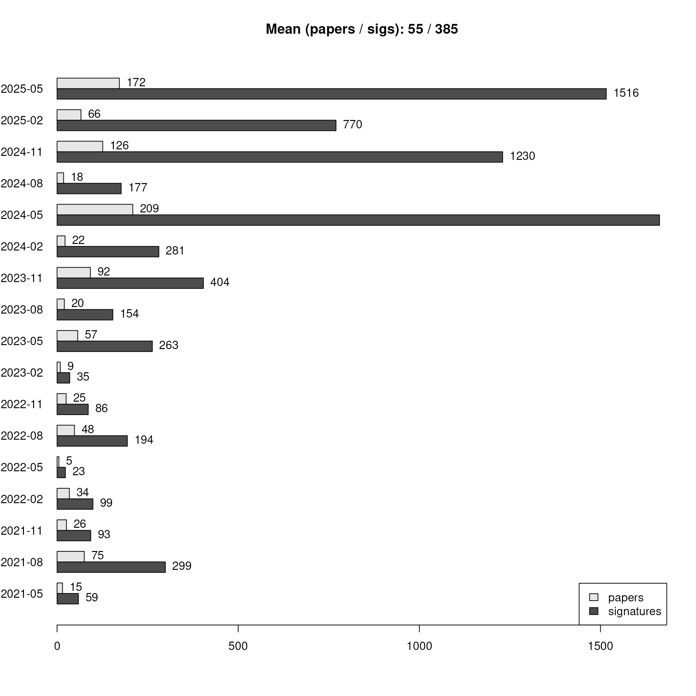
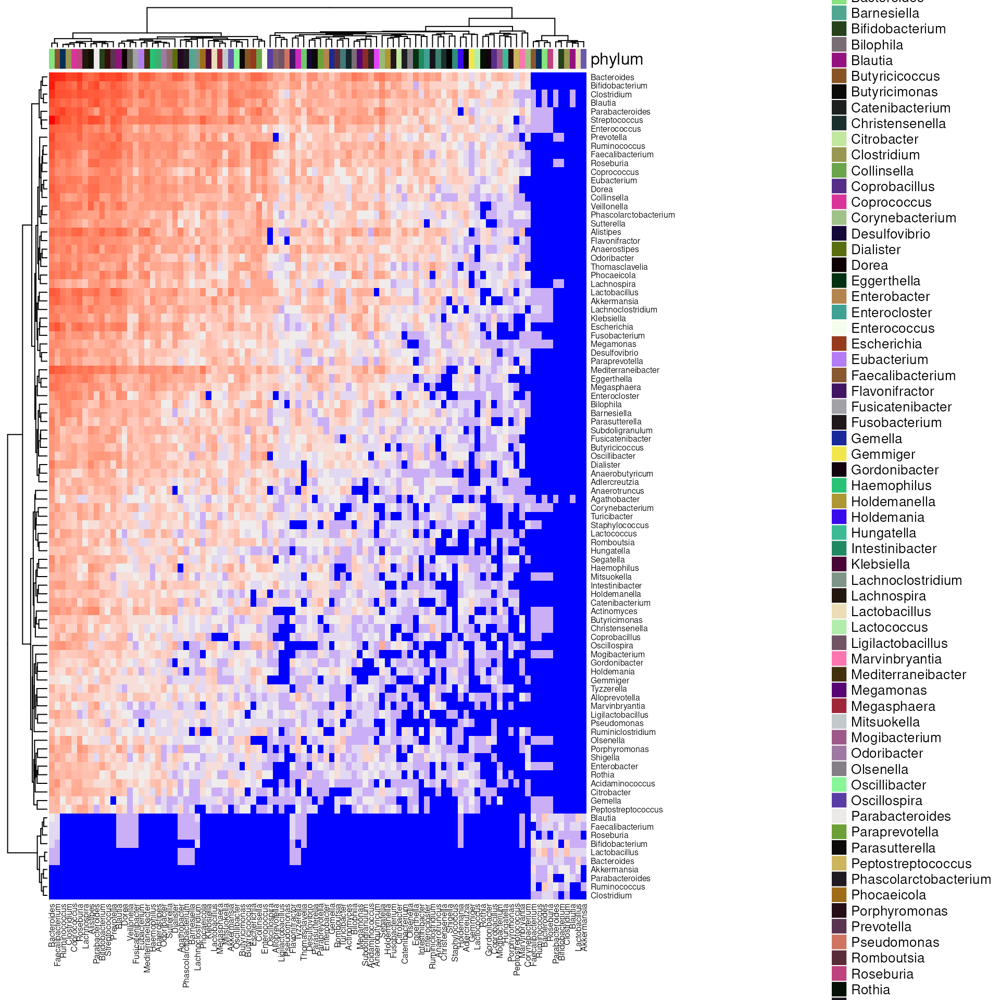

Reading data
Get bulk export from bugsigdb.org:
full.dat <- bugsigdbr::importBugSigDB(version = "devel", cache = FALSE)
dim(full.dat)## [1] 2551 48
colnames(full.dat)## [1] "Study" "Study design"
## [3] "PMID" "DOI"
## [5] "URL" "Authors list"
## [7] "Title" "Journal"
## [9] "Year" "Experiment"
## [11] "Location of subjects" "Host species"
## [13] "Body site" "UBERON ID"
## [15] "Condition" "EFO ID"
## [17] "Group 0 name" "Group 1 name"
## [19] "Group 1 definition" "Group 0 sample size"
## [21] "Group 1 sample size" "Antibiotics exclusion"
## [23] "Sequencing type" "16S variable region"
## [25] "Sequencing platform" "Statistical test"
## [27] "Significance threshold" "MHT correction"
## [29] "LDA Score above" "Matched on"
## [31] "Confounders controlled for" "Pielou"
## [33] "Shannon" "Chao1"
## [35] "Simpson" "Inverse Simpson"
## [37] "Richness" "Signature page name"
## [39] "Source" "Curated date"
## [41] "Curator" "Revision editor"
## [43] "Description" "Abundance in Group 1"
## [45] "MetaPhlAn taxon names" "NCBI Taxonomy IDs"
## [47] "State" "Reviewer"Stripping illformed entries:
Curation output
Number of papers and signatures curated:
## [1] 644
nrow(full.dat)## [1] 2551Publication date of the curated papers:
pmids <- pmids[!is.na(pmids)]
pubyear1 <- pmid2pubyear(pmids[1:361])
pubyear2 <- pmid2pubyear(pmids[362:length(pmids)])
pubyear <- c(pubyear1, pubyear2)
head(cbind(pmids, pubyear))## pmids pubyear
## [1,] "28038683" "2016"
## [2,] "28173873" "2017"
## [3,] "27015276" "2016"
## [4,] "27625705" "2016"
## [5,] "23071781" "2012"
## [6,] "28467925" "2017"
tab <- table(pubyear)
tab <- tab[-length(tab)]
tab <- tab[order(as.integer(names(tab)))]
df <- data.frame(year = names(tab), papers = as.integer(tab))
ggbarplot(df, x = "year", y = "papers",
label = TRUE, fill = "steelblue",
ggtheme = theme_bw())
Stripping empty signatures:
ind1 <- lengths(full.dat[["MetaPhlAn taxon names"]]) > 0
ind2 <- lengths(full.dat[["NCBI Taxonomy IDs"]]) > 0
dat <- full.dat[ind1 & ind2,]
nrow(dat)## [1] 2551Papers containing only empty UP and DOWN signatures (under curation?):
## numeric(0)Progress over time:
dat[,"Curated date"] <- as.character(lubridate::dmy(dat[,"Curated date"]))
plotProgressOverTime(dat)
plotProgressOverTime(dat, diff = TRUE)
Stratified by curator:
npc <- stratifyByCurator(dat)
plotCuratorStats(dat, npc)
Number of complete and revised signatures:
table(df[["State"]])## < table of extent 0 >
table(dat[,"Revision editor"])##
## Chloe
## 4
## Claregrieve1
## 161
## Claregrieve1,Chloe
## 1
## Claregrieve1,Chloe,WikiWorks743
## 1
## Claregrieve1,Fatima
## 11
## Claregrieve1,Fatima,Yu Wang
## 1
## Claregrieve1,Lwaldron
## 1
## Cynthia Anderson
## 28
## Cynthia Anderson,Claregrieve1
## 2
## Cynthia Anderson,Fatima
## 2
## Fatima
## 16
## Fatima,Claregrieve1
## 2
## Fcuevas3
## 36
## Fcuevas3,Claregrieve1
## 4
## Fcuevas3,Fatima
## 1
## Fcuevas3,Rimsha
## 8
## Gina
## 14
## Haoyanzh
## 20
## Haoyanzh,Lwaldron
## 2
## Itslanapark
## 33
## Itslanapark,Chloe
## 2
## Itslanapark,Claregrieve1
## 6
## Itslanapark,Fatima,Chloe
## 1
## Itslanapark,Rimsha
## 1
## Jacquelynshevin
## 8
## Jeshudy
## 65
## Jeshudy,Claregrieve1
## 34
## Jeshudy,Fatima
## 4
## Joyessa
## 4
## Joyessa,Claregrieve1
## 19
## Joyessa,Fatima,Claregrieve1
## 2
## Kaluifeanyi101
## 56
## Kaluifeanyi101,Claregrieve1
## 16
## Kaluifeanyi101,Fatima
## 2
## Kwekuamoo
## 25
## Kwekuamoo,Chloe
## 1
## Kwekuamoo,Claregrieve1
## 4
## Lorakasselman,Chloe
## 2
## Lorakasselman,Claregrieve1
## 2
## Lwaldron
## 10
## Madhubani Dey
## 22
## Madhubani Dey,Chloe
## 1
## Madhubani Dey,Claregrieve1
## 20
## Madhubani Dey,Fatima,Claregrieve1
## 2
## Madhubani Dey,Lwaldron
## 1
## Manuela
## 11
## Mary Bearkland
## 36
## Mary Bearkland,Claregrieve1
## 16
## Mary Bearkland,Fatima
## 4
## Maryemzaki,Lwaldron
## 2
## Mmarin
## 21
## Mmarin,Claregrieve1
## 13
## Rimsha
## 4
## Rimsha,Lwaldron
## 1
## Samara.Khan
## 38
## Samara.Khan,Claregrieve1
## 9
## Samara.Khan,Fatima
## 1
## Sharmilac
## 7
## Sharmilac,Claregrieve1
## 2
## Sharmilac,Fatima
## 7
## Tislam
## 33
## Tislam,Claregrieve1
## 5
## Tislam,Fatima
## 8
## Tislam,Fatima,Claregrieve1
## 1
## Tislam,Rimsha,Claregrieve1
## 2
## Titas
## 11
## Titas,Fatima
## 1
## Titas,Lwaldron
## 1
## Valentina
## 2
## WikiWorks,Fatima
## 2
## WikiWorks,Jeshudy
## 1
## WikiWorks743
## 1209
## WikiWorks743,Chloe
## 4
## WikiWorks743,Claregrieve1
## 276
## WikiWorks743,Cynthia Anderson,LGeistlinger
## 2
## WikiWorks743,Cynthia Anderson,Lwaldron
## 1
## WikiWorks743,Fatima
## 47
## WikiWorks743,Fatima,Claregrieve1
## 11
## WikiWorks743,Fatima,Kwekuamoo
## 2
## WikiWorks743,Fatima,Lwaldron
## 3
## WikiWorks743,KathyWaldron
## 4
## WikiWorks743,Kwekuamoo
## 1
## WikiWorks743,Lwaldron
## 33
## WikiWorks743,Lwaldron,Claregrieve1
## 7
## WikiWorks743,Lwaldron,Fatima
## 1
## WikiWorks743,Rimsha,Fatima
## 1
## WikiWorks743,Rimsha,Fatima,LGeistlinger
## 1
## WikiWorks743,WikiWorks753
## 1
## WikiWorks743,WikiWorks753,WikiWorks,Claregrieve1
## 1
## Yu Wang,Fatima
## 1
## Yu Wang,Fatima,Claregrieve1
## 4Study stats
Study design
spl <- split(dat[["Study"]], dat[["Study design"]])
sds <- lapply(spl, unique)
sort(lengths(sds), decreasing = FALSE)## case-control,prospective cohort
## 1
## case-control,meta-analysis
## 5
## meta-analysis
## 5
## randomized controlled trial
## 28
## laboratory experiment
## 30
## time series / longitudinal observational
## 57
## prospective cohort
## 62
## cross-sectional observational, not case-control
## 186
## case-control
## 285Experiment stats
Columns of the full dataset that describe experiments:
# Experiment ID
exp.cols <- c("Study", "Experiment")
# Subjects
sub.cols <- c("Host species",
"Location of subjects",
"Body site",
"Condition",
"Antibiotics exclusion",
"Group 0 sample size",
"Group 1 sample size")
# Lab analysis
lab.cols <- c("Sequencing type",
"16S variable region",
"Sequencing platform")
# Statistical analysis
stat.cols <- c("Statistical test",
"MHT correction",
"Significance threshold")
# Alpha diversity
div.cols <- c("Pielou",
"Shannon",
"Chao1",
"Simpson",
"Inverse Simpson",
"Richness")Restrict dataset to experiment information:
Subjects
Number of experiments for the top 10 categories for each subjects column:
## $`Host species`
##
## Homo sapiens Mus musculus Rattus norvegicus
## 1406 63 6
##
## $`Location of subjects`
##
## China United States of America Italy
## 459 381 63
## Spain South Korea Japan
## 49 44 42
## Finland Netherlands Canada
## 35 28 27
## Brazil
## 25
##
## $`Body site`
##
## Feces Saliva Vagina Uterine cervix Meconium
## 873 71 47 40 29
## Skin of body Nasopharynx Intestine Mouth Stomach
## 29 28 25 22 22
##
## $Condition
##
## obesity
## 104
## COVID-19
## 88
## antimicrobial agent
## 78
## colorectal cancer
## 76
## diet
## 56
## human papilloma virus infection
## 41
## cervical glandular intraepithelial neoplasia
## 38
## gastric cancer
## 35
## cesarean section
## 34
## endometriosis
## 33
##
## $`Antibiotics exclusion`
##
## 3 months 1 month 6 months
## 187 114 75
## 2 months 4 weeks 2 weeks
## 56 46 30
## None specified 8 weeks before sample collection
## 13 11 10
## 30 days
## 9Proportions instead:
sub.tab <- lapply(sub.cols[1:5], tabCol, df = exps, n = 10, perc = TRUE)
names(sub.tab) <- sub.cols[1:5]
sub.tab## $`Host species`
##
## Homo sapiens Mus musculus Rattus norvegicus
## 0.95300 0.04270 0.00407
##
## $`Location of subjects`
##
## China United States of America Italy
## 0.3130 0.2600 0.0430
## Spain South Korea Japan
## 0.0334 0.0300 0.0286
## Finland Netherlands Canada
## 0.0239 0.0191 0.0184
## Brazil
## 0.0171
##
## $`Body site`
##
## Feces Saliva Vagina Uterine cervix Meconium
## 0.5910 0.0481 0.0318 0.0271 0.0196
## Skin of body Nasopharynx Intestine Mouth Stomach
## 0.0196 0.0190 0.0169 0.0149 0.0149
##
## $Condition
##
## obesity
## 0.0712
## COVID-19
## 0.0602
## antimicrobial agent
## 0.0534
## colorectal cancer
## 0.0520
## diet
## 0.0383
## human papilloma virus infection
## 0.0281
## cervical glandular intraepithelial neoplasia
## 0.0260
## gastric cancer
## 0.0240
## cesarean section
## 0.0233
## endometriosis
## 0.0226
##
## $`Antibiotics exclusion`
##
## 3 months 1 month 6 months
## 0.20700 0.12600 0.08310
## 2 months 4 weeks 2 weeks
## 0.06210 0.05100 0.03330
## None specified 8 weeks before sample collection
## 0.01440 0.01220 0.01110
## 30 days
## 0.00998Sample size:
ssize <- apply(exps[,sub.cols[6:7]], 2, summary)
ssize## Group 0 sample size Group 1 sample size
## Min. 0.00000 1.00000
## 1st Qu. 13.00000 13.00000
## Median 26.00000 24.00000
## Mean 58.59539 76.53068
## 3rd Qu. 50.00000 45.00000
## Max. 1883.00000 9623.00000
## NA's 47.00000 44.00000Lab analysis
Number of experiments for the top 10 categories for each lab analysis column:
## $`Sequencing type`
##
## 16S WMS
## 1343 121
##
## $`16S variable region`
##
## 34 4 123 12 345 45 3 56 1234 23
## 439 341 113 76 56 43 38 18 16 11
##
## $`Sequencing platform`
##
## Illumina Roche454
## 998 222
## Ion Torrent RT-qPCR
## 88 82
## Human Intestinal Tract Chip MGISEQ-2000
## 12 11
## Sanger Mass spectrometry
## 6 5
## HTF-Microbi.Array BGISEQ-500 Sequencing
## 4 3Proportions instead:
lab.tab <- lapply(lab.cols, tabCol, df = exps, n = 10, perc = TRUE)
names(lab.tab) <- lab.cols
lab.tab## $`Sequencing type`
##
## 16S WMS
## 0.9170 0.0827
##
## $`16S variable region`
##
## 34 4 123 12 345 45 3 56 1234 23
## 0.37000 0.28700 0.09510 0.06400 0.04710 0.03620 0.03200 0.01520 0.01350 0.00926
##
## $`Sequencing platform`
##
## Illumina Roche454
## 0.68900 0.15300
## Ion Torrent RT-qPCR
## 0.06080 0.05660
## Human Intestinal Tract Chip MGISEQ-2000
## 0.00829 0.00760
## Sanger Mass spectrometry
## 0.00414 0.00345
## HTF-Microbi.Array BGISEQ-500 Sequencing
## 0.00276 0.00207Statistical analysis
Number of experiments for the top 10 categories for each statistical analysis column:
## $`Statistical test`
##
## Mann-Whitney (Wilcoxon) LEfSe
## 415 405
## Kruskall-Wallis DESeq2
## 97 85
## T-Test ANOVA
## 84 69
## Linear Regression PERMANOVA
## 41 29
## Negative Binomial Regression Metastats
## 26 25
##
## $`MHT correction`
##
## TRUE FALSE
## 674 664
##
## $`Significance threshold`
##
## 0.05 0.1 0.01 0.001 0.2 0.15 0.005 0 0.25 1e-11
## 1292 58 25 14 13 10 4 3 3 1Proportions instead:
stat.tab <- lapply(stat.cols, tabCol, df = exps, n = 10, perc = TRUE)
names(stat.tab) <- stat.cols
stat.tab## $`Statistical test`
##
## Mann-Whitney (Wilcoxon) LEfSe
## 0.2890 0.2820
## Kruskall-Wallis DESeq2
## 0.0675 0.0591
## T-Test ANOVA
## 0.0584 0.0480
## Linear Regression PERMANOVA
## 0.0285 0.0202
## Negative Binomial Regression Metastats
## 0.0181 0.0174
##
## $`MHT correction`
##
## TRUE FALSE
## 0.504 0.496
##
## $`Significance threshold`
##
## 0.05 0.1 0.01 0.001 0.2 0.15 0.005 0 0.25 1e-11
## 0.9050 0.0406 0.0175 0.0098 0.0091 0.0070 0.0028 0.0021 0.0021 0.0007Alpha diversity
Overall distribution:
apply(exps[,div.cols], 2, table)## Pielou Shannon Chao1 Simpson Inverse Simpson Richness
## decreased 18 182 114 55 15 102
## increased 10 147 73 43 11 105
## unchanged 39 525 281 199 36 268Correspondence of Shannon diversity and Richness:
table(exps$Shannon, exps$Richness)##
## decreased increased unchanged
## decreased 45 4 17
## increased 2 42 16
## unchanged 19 28 202Conditions with consistently increased or decreased alpha diversity:
tabDiv(exps, "Shannon", "Condition")## increased decreased unchanged
## COVID-19 4 15 33
## gastric cancer 3 12 14
## human papilloma virus infection 6 0 24
## lung cancer 2 8 5
## Parkinson's disease 6 0 5
## cesarean section 5 0 14
## HIV infection 1 6 10
## acute lymphoblastic leukemia 0 4 4
## cervical cancer 4 0 4
## hypertension 4 0 2
## obesity 3 7 39
## age 2 5 2
## antimicrobial agent 6 9 23
## atopic asthma 4 1 7
## periodontitis 3 0 2
## squamous cell carcinoma 3 0 3
## cervical glandular intraepithelial neoplasia 2 0 9
## diet 6 4 14
## Eczema 0 2 9
## ethnic group 4 6 7
## food allergy 0 2 10
## socioeconomic status 4 2 4
## air pollution 7 6 3
## asthma 1 0 11
## atopic eczema 2 3 17
## chronic fatigue syndrome 0 1 4
## chronic hepatitis B virus infection 0 1 5
## colorectal cancer 6 5 24
## endometriosis 2 3 15
## esophageal cancer 1 2 2
## milk allergic reaction 1 0 5
## multiple sclerosis 0 1 7
## pancreatic carcinoma 0 1 4
## rheumatoid arthritis 2 3 1
## schizophrenia 1 2 6
## smoking behavior 0 1 6
## arthritis 1 1 5
## colorectal adenoma 2 2 5
## gestational diabetes 0 0 5
## irritable bowel syndrome 0 0 5
## type II diabetes mellitus 2 2 9
tabDiv(exps, "Shannon", "Condition", perc = TRUE)## increased decreased unchanged
## COVID-19 0.077 0.290 0.63
## gastric cancer 0.100 0.410 0.48
## human papilloma virus infection 0.200 0.000 0.80
## lung cancer 0.130 0.530 0.33
## Parkinson's disease 0.550 0.000 0.45
## cesarean section 0.260 0.000 0.74
## HIV infection 0.059 0.350 0.59
## acute lymphoblastic leukemia 0.000 0.500 0.50
## cervical cancer 0.500 0.000 0.50
## hypertension 0.670 0.000 0.33
## obesity 0.061 0.140 0.80
## age 0.220 0.560 0.22
## antimicrobial agent 0.160 0.240 0.61
## atopic asthma 0.330 0.083 0.58
## periodontitis 0.600 0.000 0.40
## squamous cell carcinoma 0.500 0.000 0.50
## cervical glandular intraepithelial neoplasia 0.180 0.000 0.82
## diet 0.250 0.170 0.58
## Eczema 0.000 0.180 0.82
## ethnic group 0.240 0.350 0.41
## food allergy 0.000 0.170 0.83
## socioeconomic status 0.400 0.200 0.40
## air pollution 0.440 0.380 0.19
## asthma 0.083 0.000 0.92
## atopic eczema 0.091 0.140 0.77
## chronic fatigue syndrome 0.000 0.200 0.80
## chronic hepatitis B virus infection 0.000 0.170 0.83
## colorectal cancer 0.170 0.140 0.69
## endometriosis 0.100 0.150 0.75
## esophageal cancer 0.200 0.400 0.40
## milk allergic reaction 0.170 0.000 0.83
## multiple sclerosis 0.000 0.120 0.88
## pancreatic carcinoma 0.000 0.200 0.80
## rheumatoid arthritis 0.330 0.500 0.17
## schizophrenia 0.110 0.220 0.67
## smoking behavior 0.000 0.140 0.86
## arthritis 0.140 0.140 0.71
## colorectal adenoma 0.220 0.220 0.56
## gestational diabetes 0.000 0.000 1.00
## irritable bowel syndrome 0.000 0.000 1.00
## type II diabetes mellitus 0.150 0.150 0.69
tabDiv(exps, "Richness", "Condition")## increased decreased unchanged
## COVID-19 4 15 17
## air pollution 15 5 3
## antimicrobial agent 1 8 7
## Parkinson's disease 8 1 0
## acute lymphoblastic leukemia 5 1 0
## cervical glandular intraepithelial neoplasia 4 0 2
## atopic asthma 4 1 7
## colorectal cancer 6 3 10
## food allergy 0 3 9
## gastric cancer 3 6 13
## HIV infection 0 3 7
## colorectal adenoma 0 2 8
## diet 3 1 6
## endometriosis 3 1 13
## asthma 1 0 10
## atopic eczema 2 1 7
## ethnic group 3 2 1
## human papilloma virus infection 2 1 13
## irritable bowel syndrome 0 1 7
## lung cancer 0 1 6
## obesity 6 7 21
## cesarean section 2 2 9
## multiple sclerosis 0 0 9
## smoking behavior 1 1 4
tabDiv(exps, "Richness", "Condition", perc = TRUE)## increased decreased unchanged
## COVID-19 0.110 0.420 0.47
## air pollution 0.650 0.220 0.13
## antimicrobial agent 0.062 0.500 0.44
## Parkinson's disease 0.890 0.110 0.00
## acute lymphoblastic leukemia 0.830 0.170 0.00
## cervical glandular intraepithelial neoplasia 0.670 0.000 0.33
## atopic asthma 0.330 0.083 0.58
## colorectal cancer 0.320 0.160 0.53
## food allergy 0.000 0.250 0.75
## gastric cancer 0.140 0.270 0.59
## HIV infection 0.000 0.300 0.70
## colorectal adenoma 0.000 0.200 0.80
## diet 0.300 0.100 0.60
## endometriosis 0.180 0.059 0.76
## asthma 0.091 0.000 0.91
## atopic eczema 0.200 0.100 0.70
## ethnic group 0.500 0.330 0.17
## human papilloma virus infection 0.120 0.062 0.81
## irritable bowel syndrome 0.000 0.120 0.88
## lung cancer 0.000 0.140 0.86
## obesity 0.180 0.210 0.62
## cesarean section 0.150 0.150 0.69
## multiple sclerosis 0.000 0.000 1.00
## smoking behavior 0.170 0.170 0.67Body sites with consistently increased or decreased alpha diversity:
tabDiv(exps, "Shannon", "Body site")## increased decreased unchanged
## Feces 66 106 315
## Meconium 6 0 8
## Stomach 3 9 5
## Tongue 0 5 7
## Vagina 8 3 8
## Mouth 6 2 11
## Posterior fornix of vagina 4 0 3
## Caecum 1 4 1
## Dental plaque 0 3 3
## Oral cavity 3 0 2
## Skin of body 4 7 6
## Subgingival dental plaque 5 2 4
## Uterine cervix 3 0 23
## Nasopharynx 1 3 18
## Saliva 13 11 31
## Breast 3 2 0
## Lung 1 2 5
## Uterus 0 1 7
## Blood 0 0 5
## Bronchus 0 0 6
## Intestine 1 1 6
## Rectum 0 0 12
tabDiv(exps, "Shannon", "Body site", perc = TRUE)## increased decreased unchanged
## Feces 0.140 0.22 0.65
## Meconium 0.430 0.00 0.57
## Stomach 0.180 0.53 0.29
## Tongue 0.000 0.42 0.58
## Vagina 0.420 0.16 0.42
## Mouth 0.320 0.11 0.58
## Posterior fornix of vagina 0.570 0.00 0.43
## Caecum 0.170 0.67 0.17
## Dental plaque 0.000 0.50 0.50
## Oral cavity 0.600 0.00 0.40
## Skin of body 0.240 0.41 0.35
## Subgingival dental plaque 0.450 0.18 0.36
## Uterine cervix 0.120 0.00 0.88
## Nasopharynx 0.045 0.14 0.82
## Saliva 0.240 0.20 0.56
## Breast 0.600 0.40 0.00
## Lung 0.120 0.25 0.62
## Uterus 0.000 0.12 0.88
## Blood 0.000 0.00 1.00
## Bronchus 0.000 0.00 1.00
## Intestine 0.120 0.12 0.75
## Rectum 0.000 0.00 1.00
tabDiv(exps, "Richness", "Body site")## increased decreased unchanged
## Colon 9 0 1
## Oropharynx 0 6 1
## Uterine cervix 6 0 16
## Feces 50 55 141
## Stomach 2 7 3
## Posterior fornix of vagina 4 0 2
## Subgingival dental plaque 4 0 3
## Nasopharynx 3 5 10
## Rectum 0 2 7
## Tongue 0 2 4
## Vagina 3 1 8
## Caecum 2 3 0
## Meconium 1 2 8
## Mouth 2 1 5
## Saliva 3 4 15
## Bronchus 0 0 6
## Intestine 0 0 7
tabDiv(exps, "Richness", "Body site", perc = TRUE)## increased decreased unchanged
## Colon 0.900 0.000 0.10
## Oropharynx 0.000 0.860 0.14
## Uterine cervix 0.270 0.000 0.73
## Feces 0.200 0.220 0.57
## Stomach 0.170 0.580 0.25
## Posterior fornix of vagina 0.670 0.000 0.33
## Subgingival dental plaque 0.570 0.000 0.43
## Nasopharynx 0.170 0.280 0.56
## Rectum 0.000 0.220 0.78
## Tongue 0.000 0.330 0.67
## Vagina 0.250 0.083 0.67
## Caecum 0.400 0.600 0.00
## Meconium 0.091 0.180 0.73
## Mouth 0.250 0.120 0.62
## Saliva 0.140 0.180 0.68
## Bronchus 0.000 0.000 1.00
## Intestine 0.000 0.000 1.00Signature stats
sigs <- bugsigdbr::getSignatures(dat, tax.id.type = "metaphlan")Unique microbes
Number unique microbes contained in the signatures:
## [1] 2356Development of unique microbes captured over time:

Microbe set size distribution
## Min. 1st Qu. Median Mean 3rd Qu. Max.
## 1.000 2.000 4.000 7.146 9.000 518.000
gghistogram(lengths(sigs), bins = 30, ylab = "number of signatures",
xlab = "signature size", fill = "#00AFBB", ggtheme = theme_bw())
## [1] 1168Microbe co-occurrence
dat.feces <- subset(dat, `Body site` == "Feces")
cooc.mat <- microbeHeatmap(dat.feces, tax.level = "genus")## Loading required namespace: safe
antag.mat <- microbeHeatmap(dat.feces, tax.level = "genus", antagonistic = TRUE)
Get the top 20 genera most frequently reported as differentially abundant:
sigs.feces <- getSignatures(dat.feces, tax.id.type = "taxname",
tax.level = "genus", exact.tax.level = FALSE)
top20 <- sort(table(unlist(sigs.feces)), decreasing = TRUE)[1:20]
top20##
## Bacteroides Bifidobacterium Faecalibacterium Prevotella
## 270 187 175 164
## Streptococcus Clostridium Ruminococcus Roseburia
## 161 147 140 134
## Blautia Lactobacillus Parabacteroides Alistipes
## 132 131 123 114
## Dorea Coprococcus Veillonella Eubacterium
## 106 102 98 93
## Lachnospira Akkermansia Enterococcus Escherichia
## 88 87 87 85Subset heatmaps to the top 20 genera most frequently reported as differentially abundant:
## [1] TRUE## [1] TRUEDistinguish by direction of abundance change (increased / decreased):
# increased
sub.dat.feces <- subset(dat.feces, `Abundance in Group 1` == "increased")
sigs.feces.up <- getSignatures(sub.dat.feces, tax.id.type = "taxname",
tax.level = "genus", exact.tax.level = FALSE)
top20.up <- table(unlist(sigs.feces.up))[names(top20)]
top20.up##
## Bacteroides Bifidobacterium Faecalibacterium Prevotella
## 104 76 58 83
## Streptococcus Clostridium Ruminococcus Roseburia
## 99 75 58 43
## Blautia Lactobacillus Parabacteroides Alistipes
## 54 92 58 38
## Dorea Coprococcus Veillonella Eubacterium
## 47 36 65 43
## Lachnospira Akkermansia Enterococcus Escherichia
## 19 50 73 55
# decreased
sub.dat.feces <- subset(dat.feces, `Abundance in Group 1` == "decreased")
sigs.feces.down <- getSignatures(sub.dat.feces, tax.id.type = "taxname",
tax.level = "genus", exact.tax.level = FALSE)
top20.down <- table(unlist(sigs.feces.down))[names(top20)]
top20.down##
## Bacteroides Bifidobacterium Faecalibacterium Prevotella
## 157 101 112 77
## Streptococcus Clostridium Ruminococcus Roseburia
## 52 67 77 85
## Blautia Lactobacillus Parabacteroides Alistipes
## 72 37 59 70
## Dorea Coprococcus Veillonella Eubacterium
## 53 60 28 44
## Lachnospira Akkermansia Enterococcus Escherichia
## 63 31 10 24Plot the heatmap
# annotation
mat <- matrix(nc = 2, cbind(top20.up, top20.down))
bp <- ComplexHeatmap::anno_barplot(mat, gp = gpar(fill = c("#D55E00", "#0072B2"),
col = c("#D55E00", "#0072B2")),
height = unit(2, "cm"))
banno <- ComplexHeatmap::HeatmapAnnotation(`Abundance in Group 1` = bp)
lgd_list <- list(
Legend(labels = c("increased", "decreased"),
title = "Abundance in Group 1",
type = "grid",
legend_gp = gpar(col = c("#D55E00", "#0072B2"), fill = c("#D55E00", "#0072B2"))))
# same direction
# lcm <- sweep(cooc.mat, 2, matrixStats::colMaxs(cooc.mat), FUN = "/")
# we need to dampen the maximum here a bit down,
# otherwise 100% self co-occurrence takes up a large fraction of the colorscale,
sec <- apply(cooc.mat, 2, function(x) sort(x, decreasing = TRUE)[2])
cooc.mat2 <- cooc.mat
for(i in 1:ncol(cooc.mat2)) cooc.mat2[i,i] <- min(cooc.mat2[i,i], 1.4 * sec[i])
lcm <- sweep(cooc.mat2, 2, matrixStats::colMaxs(cooc.mat2), FUN = "/")
col <- circlize::colorRamp2(c(0,1), c("#EEEEEE", "red"))
ht1 <- ComplexHeatmap::Heatmap(lcm,
col = col,
name = "Relative frequency (top)",
cluster_columns = FALSE,
row_km = 3,
row_title = "same direction",
column_names_rot = 45,
row_names_gp = gpar(fontsize = 8),
column_names_gp = gpar(fontsize = 8))
# opposite direction
acm <- sweep(antag.mat, 2, matrixStats::colMaxs(antag.mat), FUN = "/")
col <- circlize::colorRamp2(c(0,1), c("#EEEEEE", "blue"))
ht2 <- ComplexHeatmap::Heatmap(acm,
col = col,
name = "Relative frequency (bottom)",
cluster_columns = FALSE,
row_title = "opposite direction",
row_km = 3,
column_names_rot = 45,
row_names_gp = gpar(fontsize = 8),
column_names_gp = gpar(fontsize = 8))
# phylum
sfp <- bugsigdbr::getSignatures(dat.feces, tax.id.type = "metaphlan",
tax.level = "genus", exact.tax.level = FALSE)
sfp20 <- sort(table(unlist(sfp)), decreasing = TRUE)[1:20]
uanno <- bugsigdbr::extractTaxLevel(names(sfp20),
tax.id.type = "taxname",
tax.level = "phylum",
exact.tax.level = FALSE)
phyla.grid <- seq_along(unique(uanno))
panno <- ComplexHeatmap::HeatmapAnnotation(phylum = uanno)
uanno <- matrix(uanno, nrow = 1)
colnames(uanno) <- names(top20)
pcols <- c("#CC79A7", "#F0E442", "#009E73", "#56B4E9", "#E69F00")
uanno <- ComplexHeatmap::Heatmap(uanno, name = "Phylum",
col = pcols[phyla.grid],
cluster_columns = FALSE,
column_names_rot = 45,
column_names_gp = gpar(fontsize = 8))
# put everything together
ht_list <- ht1 %v% banno %v% ht2 %v% uanno
ComplexHeatmap::draw(ht_list, annotation_legend_list = lgd_list, merge_legend = TRUE)
decorate_annotation("Abundance in Group 1", {
grid.text("# signatures", x = unit(-1, "cm"), rot = 90, just = "bottom", gp = gpar(fontsize = 8))
grid.text("*", x = unit(2.45, "cm"), y = unit(1.2, "cm"))
grid.text("*", x = unit(5.18, "cm"), y = unit(1, "cm"))
grid.text("*", x = unit(6.55, "cm"), y = unit(0.95, "cm"))
grid.text("*", x = unit(8.6, "cm"), y = unit(0.85, "cm"))
grid.text("*", x = unit(10, "cm"), y = unit(0.7, "cm"))
grid.text("*", x = unit(10.7, "cm"), y = unit(0.7, "cm"))
})
Signature similarity
Jaccard index
Inspect signature similarity for signatures from stomach samples based on Jaccard index:
stomachsub <- subset(dat, `Body site` == "Stomach")
sigsub <- bugsigdbr::getSignatures(stomachsub)
pair.jsim <- calcJaccardSimilarity(sigsub)Create a dendrogram of Jaccard dissimilarities (1.0 has no overlap, 0.0 are identical signatures).